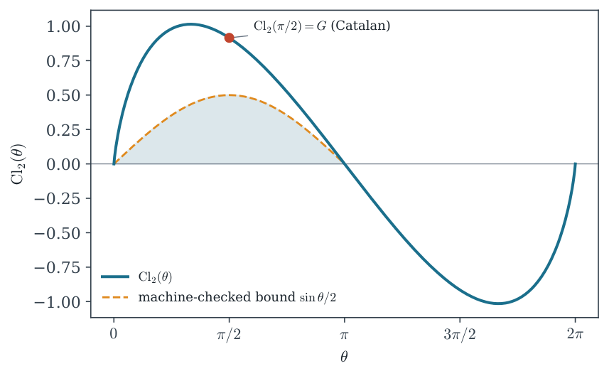

The Clock That Never Ticks: a machine-checked path from the dilogarithm to quantum speed limits in Lean 4
At a glance
What the paper contributes
A sorry-free Lean 4 path from the dilogarithm, which Mathlib cites but does not define, to a quantum state that never orthogonalizes; version 2 adds its exact floor, in Lean and in Isabelle.
- The real dilogarithm with Euler’s reflection, Landen’s transformation, the duplication formula and Li₂(1/2) (Theorem 1); the golden-ratio values and the Lee–Yang ceff = 2/5 from a 3×3 linear system, without the five-term relation.
- The circle: the Clausen function and Catalan’s constant G = Cl₂(π/2); the Fejér–Jackson inequality (Theorem 2) and, by Abel summation without asymptotics, Cl₂(θ) ≥ sin(θ)/2 on (0, π).
- Speed limits: Margolus–Levitin and an L¹ form of Mandelstam–Tamm for a scalar spectral measure (Theorem 3).
- The assembly (Theorem 4): populations 6/(π²n²) on levels Eₙ = n have divergent first and second energy moments, so both bounds give nothing, and yet the state never reaches an orthogonal state. Version 2 gives the one-line reason (the lowest level carries more than half of the weight) and shows that the Zieliński–Zych limits see exactly that (Proposition 1).
- The exact floor (Theorem 5, Corollary 1): |S| ≥ 1 − 21−s for every zeta state pₙ ∝ n−s, also where no level dominates.
- The mathematics is classical; the paper claims the formalization, the assembly and the place of the zeta state among the speed limits.
🚀 Start here: Theorem 1: Euler reflection, Landen, duplication and Li₂(1/2) for the real dilogarithm.
Main results:
- Theorem 4: the weight-2 zeta state never reaches an orthogonal state
- Corollary 1: every zeta state pₙ ∝ n⁻ˢ, s > 1, stays at least 1 − 2¹⁻ˢ away from orthogonality
🗺️ Map of the results (click a box to go to it)
Dependencies in the written proof: an arrow A → B means that this proof of B uses A. Every result rests on its written proof; the tags record what was checked besides, and each statement's “Evidence & scope” block says how far. The colour of a box is its strongest tag, in the order above; the tags in the box give the rest. Boxes with a thick border are the main results; click a box to read the statement.
📐 Setting (copied from the paper, §1)
The file Mathlib/Analysis/SpecialFunctions/Integrals/LogTrigonometric.lean of Mathlib … describes one of its integrals by referring to the dilogarithm
(§3) In the Rogers normalization \(\operatorname{L}(x)={\mathrm{Li}_2}(x)+\tfrac 12\ln x\ln (1-x)\) the \(\ln ^2\) defects cancel. (§4) On the circle the dilogarithm splits into a tame half and a wild half:
(§6) A state \(\lvert \psi _0\rangle =\sum _n c_n\lvert E_n\rangle \) evolves with autocorrelation \(S(t)=\sum _n p_n e^{-iE_nt}\), \(p_n=\lvert c_n\rvert ^2\), and reaches an orthogonal state at time \(\tau \) iff \(S(\tau )=0\). Take populations \(p_n=\frac{6}{\pi ^2 n^2}\) on levels \(E_n=n\): the weight-2 zeta state.
What this blueprint shows.
The numbered statements of the paper, with their proofs, dependencies and what checked them, under the sections that hold them (with the paper’s numbers), and the figures and tables they use. The full text is in the PDF of the paper.
2 Q1: what does the series know about its own derivative?
On the stated domains,
Lean · oursshow
added to the Lean repository after version 1 (21-oct-2026): L(1) = π²/6 and the Lee–Yang ratio c_eff = L(1/φ²)/L(1) = 2/5 as one statement (version 1: only L(1/φ²) = π²/15)
also in Isabelle (Archive of Formal Proofs), Lean 4 (bjbraams/lean-DLMF, after version 1) · not oursshow
Isabelle (Archive of Formal Proofs) · The Polylogarithm Function (M. Eberl, 2023) — the polylogarithm Li_s(z) for integer s (so Li₂), with its derivative, Li₁ = −ln(1 − z) and the duplication formula, since November 2023. Reflection, Landen and the values of this theorem are not there (grep of the whole AFP, 26-oct-2026)
Lean 4 (bjbraams/lean-DLMF, after version 1) · Real.dilog_add_dilog_one_sub, Real.dilog_add_dilog_div_sub_one, Real.dilog_one_half, Real.dilog_goldenRatio — the real dilogarithm by an integral, with reflection, Landen, Li₂(1/2) and the golden values; first commit 24-sep-2026 (read 26-oct-2026)
✅ Checked when this page was built: Basic.lean compiles with Lean 4.35.0, no errors, no sorry. Axioms — Li₂_add_Li₂_one_sub, Li₂_landen, Li₂_sq, Li₂_one_half, Li₂_inv_goldenRatio_sq, Li₂_inv_goldenRatio, Li₂_neg_inv_goldenRatio, rogersL_inv_goldenRatio_sq, rogersL_gold_sum, rogersL_one, leeYang_effective_central_charge, Li₂_neg_one: propext, Classical.choice, Quot.sound.
Reproduce: Lean 4.35.0, Mathlib f0b4c8150aa0; in that Lean project, lake env lean Basic.lean (SHA-256 of the compiled file: b7bc57fab92df8e3…; a source page on this site may show it with comments edited, under its own hash).
Trust base: 🔒 kernel only. Lean: 12 results, standard axioms only
Proof: in this note·Formalized: Lean 4, Isabelle (Archive of Formal Proofs), Lean 4 (bjbraams/lean-DLMF, after version 1), by the author (public formalizations repository), others·Covers: the whole statement·Cite: Theorem 1, p. 4, doi:10.5281/zenodo.20675270
🆕 Classical and new: classical (Euler 1768, Landen 1780; Lewin, Zagier). Version 2 (§1, §8(i)): in June 2026 none of this was in Lean; Isabelle’s AFP already had the polylogarithm of integer order with its duplication formula (Eberl 2023), which the June search missed.
↳ Not used by another result of the paper.
Formalized in Lean (see the linked declarations).
💡 In plain words (commentary, not part of the paper)
The dilogarithm is the series \({\mathrm{Li}_2}(x)=\sum _{n\ge 1}x^n/n^2\). Its value at a point says little by itself, but its values at related points are tied by exact identities: the value at \(x\) and at \(1-x\) (Euler’s reflection), at \(x\) and at \(x/(x-1)\) (Landen), at \(x\), \(-x\) and \(x^2\) (duplication). Each identity is proved the same way: differentiate the combination, see that the derivative is zero, so the combination is constant, and find the constant as a limit at the edge of the interval. The duplication needs no calculus: it is the series split into even and odd terms. Put \(x=\tfrac 12\) in the reflection and the two sides coincide, which gives \({\mathrm{Li}_2}(\tfrac 12)\). Section 3 of the paper then uses the three identities at the golden-ratio points as three linear equations, which give the golden values without Abel’s five-term relation. The domains are the ones of the series: Landen stops at \(x=\tfrac 12\) because past it \(x/(x-1)\) leaves the disc where the series converges.
🛡️ Evidence & scope
Program: Li₂(1/φ²), Li₂(1/2), Li₂(1/φ), Li₂(−1/φ), Li₂(1) = π²/6 and Li₂(−1) = −π²/12 against the series (mpmath polylog), to 10⁻¹²; rerun 21-oct: passes. figures/dilog_fig1_golden.py (godsil-gutman-lean, the script of the paper, Appendix A)
5 Q4: why is the wild half positive?
For every \(M\ge 1\) and \(\theta \in (0,\pi )\): \(\displaystyle \sum _{k=1}^{M}\frac{\sin k\theta }{k}{\gt}0\).
Lean · oursshow
added to the Lean repository after version 1 (21-oct-2026): the duplication Cl₂(2θ) = 2 Cl₂(θ) − 2 Cl₂(π − θ), Cl₂(2π/3) = (2/3) Cl₂(π/3), and Li₂(i) = −π²/48 + iG
also in Lean 4 (yuanzhu-lab/LeanPolyLog, after version 1) · not oursshow
Lean 4 (yuanzhu-lab/LeanPolyLog, after version 1) · LeanPolyLog.G — Catalan’s constant G = ∑ (−1)ⁿ/(2n+1)², defined independently (repository created 30-sep-2026; read 26-oct-2026). No Clausen function and no Fejér–Jackson there
✅ Checked when this page was built: Clausen.lean, ComplexBoundary.lean, FejerJackson.lean compiles with Lean 4.35.0, no errors, no sorry. Axioms — fejerSum_pos, dirichlet_telescope, sin_last_nonneg_at_localMin, sin_div_two_le_Cl₂, Cl₂_pos, Cl₂_pi_div_two, hasSum_cos_div_sq, Cl₂_two_mul, Cl₂_two_pi_div_three, Li₂c_I: propext, Classical.choice, Quot.sound.
Reproduce: Lean 4.35.0, Mathlib f0b4c8150aa0; in that Lean project, lake env lean Clausen.lean ComplexBoundary.lean FejerJackson.lean (SHA-256 of the compiled file: 78931a748edb7c0c…; a source page on this site may show it with comments edited, under its own hash).
Trust base: 🔒 kernel only. Lean: 10 results, standard axioms only
Proof: in this note·Formalized: Lean 4, Lean 4 (yuanzhu-lab/LeanPolyLog, after version 1), by the author (public formalizations repository), others·Covers: the whole statement·Cite: Theorem 2, p. 6, doi:10.5281/zenodo.20675270
🆕 Classical and new: classical (Fejér 1910, Jackson 1911); the paper records two proof-engineering choices, the division-free Dirichlet telescope and the asymptotics-free bound Cl₂(θ) ≥ sin(θ)/2 (§8(ii)).
↳ Used in: Theorem 4
Formalized in Lean (see the linked declarations).
💡 In plain words (commentary, not part of the paper)
Add the waves \(\sin \theta \), \(\tfrac 12\sin 2\theta \), \(\tfrac 13\sin 3\theta \), …, stopping anywhere: between \(0\) and \(\pi \) the total is always positive. For two terms one can see it by hand, \(\sin \theta +\tfrac 12\sin 2\theta =\sin \theta \, (1+\cos \theta )\). For any number of terms the proof looks at the lowest point of the sum inside \((0,\pi )\): there the derivative vanishes, that equation factors, and either way the last wave is not negative at that point, so the minimum is at least the previous sum, positive by induction. The paper then uses these positive sums to bound the Clausen function \({\mathrm{Cl}_2}(\theta )=\sum \sin (n\theta )/n^2\): it is at least \(\sin (\theta )/2\) on \((0,\pi )\), by a summation by parts whose every term is positive, with no estimate of the tail. At \(\theta =\pi /2\) the Clausen function is Catalan’s constant \(G\approx 0.9160\).
🛡️ Evidence & scope
Program: Cl₂(θ) ≥ sin(θ)/2 on 399 points of (0, π), Cl₂(π/2) = Catalan’s G, Cl₂(π) = 0 and Cl₂(2π − θ) = −Cl₂(θ) at three points, to 10⁻²⁵ (mpmath); rerun 21-oct: passes. figures/dilog_fig2_clausen.py (godsil-gutman-lean, the script of the paper, Appendix A)
🧪 Lab: Figure 2 live: the Fejér–Jackson sums as a surface, and the Clausen bound
The partial sums \(S_M(\theta )=\sum _{k\le M}\sin (k\theta )/k\) as a surface over \((\theta , M)\): positive on \((0,\pi )\) for every \(M\) (Theorem 2). Below, \(\mathrm{Cl}_2\) with the bound \(\sin (\theta )/2\) that the Abel summation gives, and Catalan’s constant at \(\pi /2\).
🖼️ Figure 2
![The Clausen function on \([0,2\pi ]\) with the machine-checked lower bound \(\sin (\theta )/2\) (shaded) on \((0,\pi )\), and Catalan’s constant at the quarter circle. The generating script asserts the bound on a \(400\)-point grid at \(30\) digits.](images/img-0001.png)
The Clausen function on \([0,2\pi ]\) with the machine-checked lower bound \(\sin (\theta )/2\) (shaded) on \((0,\pi )\), and Catalan’s constant at the quarter circle. The generating script asserts the bound on a \(400\)-point grid at \(30\) digits.
6 Q5: what physical thing beats to this function?
Let \(p_n\ge 0\) with \(\sum _np_n=1\) be the populations of levels \(E_n\ge 0\), with finite mean \(\langle E\rangle =\sum _np_nE_n\) and finite \(D_1\) about a real centre \(\bar E\). If \(S(\tau )=0\) with \(\tau \ge 0\), then
Lean · oursshow
added to the Lean repository after version 1 (21-oct-2026): D₁ ≤ ΔE (Cauchy–Schwarz) and the textbook weak Mandelstam–Tamm bound τ ≥ 1/ΔE
✅ Checked when this page was built: MandelstamTamm.lean, MargolusLevitin.lean compiles with Lean 4.35.0, no errors, no sorry. Axioms — margolus_levitin, one_sub_le_cos, mandelstam_tamm_L1, l1_dev_le_sqrt_variance, mandelstam_tamm_weak: propext, Classical.choice, Quot.sound.
Reproduce: Lean 4.35.0, Mathlib f0b4c8150aa0; in that Lean project, lake env lean MandelstamTamm.lean MargolusLevitin.lean (SHA-256 of the compiled file: 224c15dcafc7d45b…; a source page on this site may show it with comments edited, under its own hash).
Trust base: 🔒 kernel only. Lean: 5 results, standard axioms only
Proof: in this note·Formalized: Lean 4, by the author (public formalizations repository)·Covers: the whole statement·Cite: Theorem 3, p. 7, doi:10.5281/zenodo.20675270
🆕 Classical and new: classical (Mandelstam–Tamm 1945, Margolus–Levitin 1998); stated for a scalar spectral measure (§8(ii)): fully real for Margolus–Levitin, with the complex autocorrelation for Mandelstam–Tamm. The sharp π/(2ΔE) is left open (§9).
↳ Used in: Proposition 1
Formalized in Lean (see the linked declarations).
💡 In plain words (commentary, not part of the paper)
A quantum state that has evolved for a time \(\tau \) is fully distinguishable from where it started exactly when its autocorrelation \(S(\tau )=\sum _np_ne^{-iE_n\tau }\) is zero. The two speed limits say it cannot happen too soon. Margolus and Levitin, with energies measured from a ground level \(E_n\ge 0\): the time is at least \(\pi /(2\langle E\rangle )\), so a small mean energy forces a slow state. The second bound uses the mean absolute deviation of the energy \(D_1\): the time is at least \(1/D_1\); since \(D_1\le \Delta E\), it gives the textbook weak Mandelstam–Tamm bound \(\tau \ge 1/\Delta E\) (the sharp constant \(\pi /2\) is left open). Both are stated for the autocorrelation of a list of weights and energies, with no Hilbert space. The key step of the first is the inequality \(\cos x\ge 1-\tfrac 2\pi (x+\sin x)\) for \(x\ge 0\). Both bounds say nothing when the mean energy or the spread is infinite, which is the case of Theorem 4.
For every \(\theta \in (0,2\pi )\), the real and imaginary parts of the weight-2 zeta-state autocorrelation are not both zero: the state never reaches an orthogonal state.
Lean · ours, in partshow
added to the Lean repository after publication (27-oct-2026): added to the Lean repository after publication (25-oct-2026): the floor for every finite measure and τ ∈ [0, 1), and |Li_s z| ≥ η(s) for every real s > 0 on the unit circle (so every zeta state p_n ∝ n^(−s) has |S| ≥ 1 − 2^(1−s)); classical (Fejér 1937; Boyer–Parry 2021, Lemma 8 for s = 2); added to the Lean repository after publication (27-oct-2026): version 2 of the paper: the one-line reason the weight-2 zeta state never becomes orthogonal, p₁ = 6/π² > 1/2 (Uffink’s cut-off inequality, after Andrews 2007); added to the Lean repository after publication (27-oct-2026): version 2 of the paper: the Zieliński–Zych bound τ ≥ π/(2M_α)^{1/α} with its inequality, proved for 0 < α ≤ 1, and the limit α → 0, which certifies that the weight-2 zeta state never becomes orthogonal exactly through its dominant lowest level; added to the Lean repository after publication (27-oct-2026): version 2 of the paper: the floor 1 − 2^{1−s} of every zeta state, s > 1, from |Li_s| ≥ η(s) and η(s) = (1 − 2^{1−s}) ζ(s); added to the Lean repository after publication (27-oct-2026): version 2 of the paper: exact examples showing that three times monotone, or log-convex and convex, populations need not reach their smallest autocorrelation at half period; added to the Lean repository after publication (27-oct-2026): version 2 of the paper: the one-line reason the weight-2 zeta state never becomes orthogonal, p₁ = 6/π² > 1/2 (Uffink’s cut-off inequality, after Andrews 2007); added to the Lean repository after publication (27-oct-2026): the Zieliński–Zych inequality, stated in their paper for every α > 0 without proof, is now proved for α ≥ 1 too, so their fractional-moment speed limit τ ≥ π / (2 M_α)^{1/α} holds for every α > 0
Dilog.zetaState_never_orthogonalDilog.zetaStateRe_piDilog.Cl₂_two_pi_subDilog.Li₂c_exp_reDilog.Li₂c_exp_imDilog.Li₂c_exp_ne_zeroDilog.zetaState_meanEnergy_not_summableDilog.zetaState_secondMoment_not_summableDilog.norm_Li₂c_geDilog.zetaState_norm_ge_halfDilog.Li₂c_eq_mul_integralDilog.two_mul_sub_one_le_norm_tsumDilog.tsum_ne_zero_of_half_ltPolylog.one_div_one_add_le_rePolylog.le_norm_of_tendstoPolylog.tendsto_alternatingPolylog.exists_tendsto_circlePolylog.exists_tendsto_etaPolylog.exists_tendsto_partialLiPolylog.polylog_circle_floorPolylog.polylog_neg_oneQSL.zz_inequalityQSL.zielinski_zychQSL.zielinski_zych_timeQSL.tendsto_fractionalMomentQSL.zz_bound_tendsto_atTopQSL.zz_bound_tendsto_zeroPolylog.tendsto_partialEta_of_one_ltPolylog.zeta_floorPolylog.zetaState_floorPolylog.fdiffPolylog.cex3_monotone_threePolylog.cex3_not_fourPolylog.cex3_antipodePolylog.cex3_rePolylog.cexLC_logConvexPolylog.cexLC_convexPolylog.cexLC_antipodePolylog.cexLC_rePolylog.cexLC_normSqQSL.zz_inequality_of_one_leQSL.zz_inequality_allQSL.zielinski_zych_allQSL.zielinski_zych_time_all
Isabelle · oursshow
two_mul_sub_one_le_norm_suminf · Isabelle/AntipodalExamples/Dominant_Population.thy, line 51 — a population above 1/2 keeps the autocorrelation at least 2 p_j − 1 (the one-line reason of §6)
theorem two_mul_sub_one_le_norm_suminf: fixes p :: "nat \<Rightarrow> real" and u :: "nat \<Rightarrow> complex" assumes hp: "\<And>k. 0 \<le> p k" and hs: "p sums 1" and hu: "\<And>k. norm (u k) = 1" shows "2 * p j - 1 \<le> norm (\<Sum>k. of_real (p k) * u k)"
suminf_ne_zero_of_half_lt · Isabelle/AntipodalExamples/Dominant_Population.thy, line 92 — so the autocorrelation never vanishes
theorem suminf_ne_zero_of_half_lt:
fixes p :: "nat \<Rightarrow> real" and u :: "nat \<Rightarrow> complex"
assumes hp: "\<And>k. 0 \<le> p k" and hs: "p sums 1" and hu: "\<And>k. norm (u k) = 1"
and hj: "1 / 2 < p j"
shows "(\<Sum>k. of_real (p k) * u k) \<noteq> 0"Lean · Mathlib, not oursshow
Mathlib’s Fourier series of the Bernoulli polynomials, at k = 1: it gives the real part of S (the parabola), used at θ = πhasSum_one_div_nat_pow_mul_cos · Mathlib/NumberTheory/ZetaValues.lean, line 356
theorem hasSum_one_div_nat_pow_mul_cos {k : ℕ} (hk : k ≠ 0) {x : ℝ} (hx : x ∈ Icc (0 : ℝ) 1) :
HasSum (fun n : ℕ => 1 / (n : ℝ) ^ (2 * k) * Real.cos (2 * π * n * x))
((-1 : ℝ) ^ (k + 1) * (2 * π) ^ (2 * k) / 2 / (2 * k)! *
(Polynomial.map (algebraMap ℚ ℝ) (Polynomial.bernoulli (2 * k))).eval x)Mathlib commit f0b4c8150aa0, as this blueprint was built.
✅ Checked when this page was built: AntipodalCounterexamples.lean, CircleFloor.lean, Clausen.lean, ComplexBoundary.lean, DominantPopulation.lean, HausdorffFloor.lean, ZetaStateFloor.lean, ZielinskiZych.lean compiles with Lean 4.35.0, no errors, no sorry. Axioms — zetaState_never_orthogonal, zetaStateRe_pi, Cl₂_two_pi_sub, Li₂c_exp_re, Li₂c_exp_im, Li₂c_exp_ne_zero, zetaState_meanEnergy_not_summable, zetaState_secondMoment_not_summable, norm_Li₂c_ge, zetaState_norm_ge_half, Li₂c_eq_mul_integral, two_mul_sub_one_le_norm_tsum, tsum_ne_zero_of_half_lt, one_div_one_add_le_re, le_norm_of_tendsto, tendsto_alternating, exists_tendsto_circle, exists_tendsto_eta, exists_tendsto_partialLi, polylog_circle_floor, polylog_neg_one, zz_inequality, zielinski_zych, zielinski_zych_time, tendsto_fractionalMoment, zz_bound_tendsto_atTop, zz_bound_tendsto_zero, tendsto_partialEta_of_one_lt, zeta_floor, zetaState_floor, fdiff, cex3_monotone_three, cex3_not_four, cex3_antipode, cex3_re, cexLC_logConvex, cexLC_convex, cexLC_antipode, cexLC_re, cexLC_normSq, zz_inequality_of_one_le, zz_inequality_all, zielinski_zych_all, zielinski_zych_time_all: propext, Classical.choice, Quot.sound.
Reproduce: Lean 4.35.0, Mathlib f0b4c8150aa0; in that Lean project, lake env lean AntipodalCounterexamples.lean CircleFloor.lean Clausen.lean ComplexBoundary.lean DominantPopulation.lean HausdorffFloor.lean ZetaStateFloor.lean ZielinskiZych.lean (SHA-256 of the compiled file: 9c291eed2052702a…; a source page on this site may show it with comments edited, under its own hash).
Trust base: 🔒 kernel only — only part of the statement is formal (see the box). Lean: 44 results, standard axioms only · Isabelle: 2 results, no oracles
Proof: in this note·Formalized: Isabelle/HOL, Lean 4, Lean 4 (Mathlib), by the author (public formalizations repository), Mathlib contributors·Covers: part: added to the Lean repository after publication (27-oct-2026): added to the Lean repository after publication (25-oct-2026): the floor for every finite measure and τ ∈ [0, 1), and |Li_s z| ≥ η(s) for every real s > 0 on the unit circle (so every zeta state p_n ∝ n^(−s) has |S| ≥ 1 − 2^(1−s)); classical (Fejér 1937; Boyer–Parry 2021, Lemma 8 for s = 2); added to the Lean repository after publication (27-oct-2026): version 2 of the paper: the one-line reason the weight-2 zeta state never becomes orthogonal, p₁ = 6/π² > 1/2 (Uffink’s cut-off inequality, after Andrews 2007); added to the Lean repository after publication (27-oct-2026): version 2 of the paper: the Zieliński–Zych bound τ ≥ π/(2M_α)^{1/α} with its inequality, proved for 0 < α ≤ 1, and the limit α → 0, which certifies that the weight-2 zeta state never becomes orthogonal exactly through its dominant lowest level; added to the Lean repository after publication (27-oct-2026): version 2 of the paper: the floor 1 − 2^{1−s} of every zeta state, s > 1, from |Li_s| ≥ η(s) and η(s) = (1 − 2^{1−s}) ζ(s); added to the Lean repository after publication (27-oct-2026): version 2 of the paper: exact examples showing that three times monotone, or log-convex and convex, populations need not reach their smallest autocorrelation at half period; added to the Lean repository after publication (27-oct-2026): version 2 of the paper: the one-line reason the weight-2 zeta state never becomes orthogonal, p₁ = 6/π² > 1/2 (Uffink’s cut-off inequality, after Andrews 2007); added to the Lean repository after publication (27-oct-2026): the Zieliński–Zych inequality, stated in their paper for every α > 0 without proof, is now proved for α ≥ 1 too, so their fractional-moment speed limit τ ≥ π / (2 M_α)^{1/α} holds for every α > 0·Cite: Theorem 4, p. 8, doi:10.5281/zenodo.20675270
🆕 Classical and new: the assembly is the paper’s. Version 2 (§6): it follows in one line from p₁ = 6/π² > 1/2 (Uffink’s cut-off inequality, in the form of Andrews 2007, Eq. (21)), now also in Lean and Isabelle; «whose physical reading we have not seen stated, though we would not be surprised to find it folklore» (§8(iii)).
↳ Not used by another result of the paper.
Proof (as in Lean). On \((0,\pi )\) the imaginary part is \(-\frac{6}{\pi ^2}{\mathrm{Cl}_2}(\theta )\ne 0\) by the Fejér–Jackson bound. At \(\theta =\pi \) the real part is \(\frac{6}{\pi ^2}\) times the parabola value \(-\pi ^2/12\) (which is \(-\eta (2)\)), that is \(-\frac12\ne 0\). On \((\pi ,2\pi )\), the reflection \({\mathrm{Cl}_2}(2\pi -\theta )=-{\mathrm{Cl}_2}(\theta )\) hands the sign back to the first case.
💡 In plain words (commentary, not part of the paper)
Put weight \(p_n=6/(\pi ^2n^2)\) on the energy levels \(n=1,2,3,\dots \) and let the state evolve. It becomes orthogonal to where it started exactly when its autocorrelation \(S(\theta )=\sum _n p_ne^{-in\theta }\) vanishes. This \(S\) is the dilogarithm on the unit circle: its real part is a parabola, and its imaginary part is minus the Clausen function. On \((0,\pi )\) the Clausen function is at least \(\sin (\theta )/2\), which follows from the Fejér–Jackson inequality, so the imaginary part is never zero there. At \(\theta =\pi \) the real part is \(-\tfrac 12\). On \((\pi ,2\pi )\) the mirror \({\mathrm{Cl}_2}(2\pi -\theta )=-{\mathrm{Cl}_2}(\theta )\) brings back the first case. So \(S\) never vanishes. The first and second energy moments of this state diverge, so the two textbook speed limits give no bound. Version 2 adds the one-line reason: the lowest level carries \(6/\pi ^2\approx 0.61\) of the weight, more than all the others together, so they can never cancel it.
🛡️ Evidence & scope
Program: min |Li₂(e^−iθ)| on a 719-point grid of (0, 2π) sits at θ = π and equals η(2) = π²/12, to 10⁻²⁰, so |S| ≥ 1/2 on that grid (mpmath); rerun 21-oct: passes. figures/dilog_fig3_clock.py (godsil-gutman-lean, the script of the paper, Appendix A)
Program: the three language tabs of this theorem: min |S| = 1/2 at θ = π on 719 points, Σ pₙ n grows like (6/π²) ln N, S(0) = 1, min |Li₂| = π²/12 on the circle; controls: ½(1 + z) and ½(1 + z²) vanish on the circle, the zeta state truncated at n = 40 does not (a check of the blueprint; 25-oct: passes). lab/comprueba_pestanas.py
🧪 Lab: Figure 3 live: the clock that never ticks, for populations n^(−s)
The autocorrelation \(S(\theta )=\sum _n p_n e^{-in\theta }\) with \(p_n\propto n^{-s}\), as the curve \((\theta ,\operatorname {Re}S,\operatorname {Im}S)\): it never meets the line \(S=0\), while the two-level state does at \(\theta =\pi \). The floor of \(|S|\) sits at \(\theta =\pi \) and equals \(1-2^{1-s}\) for every \(s{\gt}1\) (Corollary 1); for \(s=2\) it is \(1/2\). Try \(s=1.5\): no level carries half of the weight, and the floor still holds.
🔤 Read this theorem in another mathematical language
Commentary, not part of the paper. Put populations \(p_n=6/(\pi ^2n^2)\) on the equally spaced levels \(E_n=n\). Its first and second energy moments diverge, so the Margolus–Levitin and Mandelstam–Tamm limits give no bound. Yet it never reaches a state orthogonal to where it started: the overlap \(|S(\theta )|\) stays at least \(\tfrac 12\) for every \(\theta \) (a survival probability of at least \(\tfrac 14\)), with the floor at \(\theta =\pi \). The two-level state \((|0\rangle +|1\rangle )/\sqrt2\), with the same spacing, is orthogonal at \(\theta =\pi \).
Commentary, not part of the paper. Let \(N\) be a random positive integer with \(P(N=n)=6/(\pi ^2n^2)\). Its mean is infinite. Its characteristic function \(E[e^{-i\theta N}]\) is the same series \(S(\theta )\): it has modulus at least \(\tfrac 12\) for every \(\theta \), and so never vanishes. A random variable with \(P(N=0)=P(N=1)=\tfrac 12\) (a fair coin) has characteristic function zero at \(\theta =\pi \); so has one with \(P(N=0)=P(N=2)=\tfrac 12\) at \(\theta =\pi /2\).
Commentary, not part of the paper. The dilogarithm \({\mathrm{Li}_2}(z)=\sum _{n\ge 1}z^n/n^2\) converges on the closed unit disc and has no zero on the unit circle: \(|{\mathrm{Li}_2}(z)|\ge \pi ^2/12\) for \(|z|=1\), with equality at \(z=-1\), where \({\mathrm{Li}_2}(-1)=-\pi ^2/12\). Its coefficients \(1/n^2\) decrease strictly, which is the reason from the coefficient side (Hurwitz 1913): a power series with summable, strictly decreasing positive coefficients has no zero on the circle.
Let \(E_0\) be the lowest populated level, \(p_0\) its population, the other populated levels strictly above it, and some fractional moment finite. As \(\alpha \to 0^+\), \(M_\alpha \to 1-p_0\), so the Zieliński–Zych bound tends to \(+\infty \) if \(p_0{\gt}1/2\) (and \(p_0{\lt}1\)) and to \(0\) if \(p_0{\lt}1/2\).
Lean · oursshow
Isabelle · oursshow
zz_inequality · Isabelle/ZielinskiZych/Zielinski_Zych.thy, line 452 — the inequality, 0 < α ≤ 1
theorem zz_inequality: assumes a0: "0 < a" and a1: "a \<le> 1" and x0: "0 \<le> x" shows "0 \<le> x powr a - pi powr a / 2 + pi powr a / 2 * cos x + a * pi powr (a - 1) * sin x"
zielinski_zych · Isabelle/ZielinskiZych/Zielinski_Zych.thy, line 471 — the bound π^α ≤ 2 M_α τ^α
theorem zielinski_zych:
fixes p E :: "nat \<Rightarrow> real" and e0 a M ta :: real
assumes a0: "0 < a" and a1: "a \<le> 1"
and hp: "\<forall>n. 0 \<le> p n" and hE: "\<forall>n. e0 \<le> E n" and hta: "0 \<le> ta"
and hsum: "p sums 1"
and hM: "(\<lambda>n. p n * (E n - e0) powr a) sums M"
and hRe: "(\<lambda>n. p n * cos (E n * ta)) sums 0"
and hIm: "(\<lambda>n. p n * sin (E n * ta)) sums 0"
shows "pi powr a \<le> 2 * M * ta powr a"tendsto_fractional_moment · Isabelle/ZielinskiZych/Zielinski_Zych.thy, line 531 — M_α → 1 − p₀ as α → 0⁺ (Tannery’s theorem)
theorem tendsto_fractional_moment:
fixes p E :: "nat \<Rightarrow> real" and e0 a0 :: real
assumes hp: "\<forall>n. 0 \<le> p n" and hsum: "p sums 1"
and h0: "E 0 = e0" and hE: "\<forall>n. n \<noteq> 0 \<longrightarrow> e0 < E n"
and ha0: "0 < a0" and hmom: "summable (\<lambda>n. p n * (E n - e0) powr a0)"
shows "((\<lambda>a. (\<Sum>n. p n * (E n - e0) powr a)) \<longlongrightarrow> 1 - p 0) (at_right 0)"zz_bound_tendsto_at_top · Isabelle/ZielinskiZych/Zielinski_Zych.thy, line 681 — the bound tends to +∞ when 1/2 < p₀ < 1
theorem zz_bound_tendsto_at_top:
fixes p E :: "nat \<Rightarrow> real" and e0 a0 :: real
assumes hp: "\<forall>n. 0 \<le> p n" and hsum: "p sums 1"
and h0: "E 0 = e0" and hE: "\<forall>n. n \<noteq> 0 \<longrightarrow> e0 < E n"
and ha0: "0 < a0" and hmom: "summable (\<lambda>n. p n * (E n - e0) powr a0)"
and hhalf: "1/2 < p 0" and hone: "p 0 < 1"
shows "LIM a at_right 0. pi / (2 * (\<Sum>n. p n * (E n - e0) powr a)) powr (1 / a) :> at_top"zz_bound_tendsto_zero · Isabelle/ZielinskiZych/Zielinski_Zych.thy, line 694 — the bound tends to 0 when p₀ < 1/2
theorem zz_bound_tendsto_zero:
fixes p E :: "nat \<Rightarrow> real" and e0 a0 :: real
assumes hp: "\<forall>n. 0 \<le> p n" and hsum: "p sums 1"
and h0: "E 0 = e0" and hE: "\<forall>n. n \<noteq> 0 \<longrightarrow> e0 < E n"
and ha0: "0 < a0" and hmom: "summable (\<lambda>n. p n * (E n - e0) powr a0)"
and hhalf: "p 0 < 1/2"
shows "((\<lambda>a. pi / (2 * (\<Sum>n. p n * (E n - e0) powr a)) powr (1 / a)) \<longlongrightarrow> 0) (at_right 0)"✅ Checked when this page was built: ZielinskiZych.lean compiles with Lean 4.35.0, no errors, no sorry. Axioms — zz_inequality, zielinski_zych, zielinski_zych_time, tendsto_fractionalMoment, zz_bound_tendsto_atTop, zz_bound_tendsto_zero: propext, Classical.choice, Quot.sound.
Reproduce: Lean 4.35.0, Mathlib f0b4c8150aa0; in that Lean project, lake env lean ZielinskiZych.lean (SHA-256 of the compiled file: 413bdc0e08aba2ad…; a source page on this site may show it with comments edited, under its own hash).
Trust base: 🔒 kernel only. Lean: 6 results, standard axioms only · Isabelle: 5 results, no oracles
Proof: in this note·Formalized: Isabelle/HOL, Lean 4, by the author (public formalizations repository)·Covers: the whole statement·Cite: Proposition 1, p. 9, doi:10.5281/zenodo.20675270
🆕 Classical and new: the bound is Zieliński–Zych’s (Phys. Rev. A 74, 034301, 2006, Eq. (10)), with an inequality they state without proof, proved here for 0 < α ≤ 1; the limit α → 0 is an easy observation the paper has not found stated (§6). The inequality is formalized for 0 < α ≤ 1, the range the limit needs; α > 1 is not.
↳ Not used by another result of the paper.
For \(\alpha \to 0^+\) each term \(p_n(E_n-E_0)^\alpha \) tends to \(p_n\) if \(E_n{\gt}E_0\) and is \(0\) for \(E_n=E_0\); dominated convergence gives \(M_\alpha \to 1-p_0\). Then \((2M_\alpha )^{1/\alpha }=\exp \big(\tfrac 1\alpha \ln (2M_\alpha )\big)\) tends to \(0\) when \(2(1-p_0){\lt}1\) and to \(+\infty \) when \(2(1-p_0){\gt}1\).
💡 In plain words (commentary, not part of the paper)
The textbook speed limits use the mean and the spread of the energy, both infinite for the zeta state. Zieliński and Zych have a whole family of limits that use fractional powers of the energy instead, finite here. Push the power down to zero and the family keeps only one piece of information: how much of the state sits on the lowest level. If it is more than half, the limits grow without end, which says the state never becomes orthogonal; if it is less than half, they shrink to nothing. So these limits see exactly the one-line argument of a dominant lowest level, and nothing more.
🛡️ Evidence & scope
Program: the bound for the zeta family with E₀ = 1, by an exact binomial–zeta series (no nsum), against direct sums; diverges as α → 0 for s = 2 and 1.8, tends to 0 for s = 1.6, 1.5, 1.3, and to π e^−2L = 0.7257 at s* (the threshold case, not formalized). working scripts zz_alfa_cero.py, umbral_s_estrella.py, verifica_V174.py, not published
🖼️ Figure 3

Two states with the same level spacing. The two-level state \((\lvert 0\rangle +\lvert E\rangle )/\sqrt2\) (dashed) saturates Margolus–Levitin and strikes orthogonality at \(\theta =\pi \). The zeta state (solid), with infinite mean energy, has \(\lvert S\rvert \ge \frac12\) (a theorem since version 2: zetaState_norm_ge_half): the clock that never ticks. The script asserts the floor equals \(\eta (2)=\pi ^2/12\) at \(\theta =\pi \).
7 Q6: what decides orthogonality when no level dominates?
For every real \(s{\gt}0\) and every \(z\ne 1\) on the unit circle, the series \(\mathrm{Li}_s(z)=\sum _{n\ge 1}z^n/n^s\) converges and
with equality at \(z=-1\).
Lean · oursshow
Isabelle · oursshow
moment_series_floor · Isabelle/HausdorffFloor/Hausdorff_Floor.thy, line 151 — the floor of a moment series on the unit circle (finite measure, 0 ≤ τ < 1)
theorem moment_series_floor:
fixes \<tau> :: "'a \<Rightarrow> real" and z :: complex
assumes \<tau>m: "\<tau> \<in> borel_measurable M"
and \<tau>01: "AE x in M. 0 \<le> \<tau> x \<and> \<tau> x < 1"
and z: "norm z = 1" and z1: "z \<noteq> 1"
defines "F \<equiv> (\<integral>x. 1 / (1 - of_real (\<tau> x) * z) \<partial>M)"
shows "(\<lambda>N. \<Sum>k<N. of_real (moment \<tau> k) * z ^ k) \<longlonglongrightarrow> F"
and "(\<integral>x. 1 / (1 + \<tau> x) \<partial>M) \<le> norm F"gamma_moment · Isabelle/PolylogFloor/Polylog_Floor.thy, line 176 — the Gamma-density measure has moments (k+1)^(−s)
theorem gamma_moment: assumes s: "0 < s" shows "finite_measure.moment (gmeas s) (\<lambda>x. exp (- x)) k = real (Suc k) powr (- s)"
polylog_circle_floor · Isabelle/PolylogFloor/Polylog_Floor.thy, line 273 — η(s) ≤ |Li_s z| for real s > 0, z ≠ 1 on the circle
theorem polylog_circle_floor:
fixes z :: complex
assumes s: "0 < s" and z: "norm z = 1" and z1: "z \<noteq> 1"
and L: "(\<lambda>N. \<Sum>k<N. z ^ Suc k * of_real (real (Suc k) powr (- s))) \<longlonglongrightarrow> L"
and \<eta>: "(\<lambda>N. \<Sum>k<N. (- 1) ^ k * real (Suc k) powr (- s)) \<longlonglongrightarrow> \<eta>"
shows "\<eta> \<le> norm L"✅ Checked when this page was built: AntipodeFloor.lean, HausdorffFloor.lean compiles with Lean 4.35.0, no errors, no sorry. Axioms — one_div_one_add_le_re, le_norm_of_tendsto, tendsto_alternating, exists_tendsto_circle, exists_tendsto_partialLi, polylog_circle_floor, polylog_neg_one, antipode_floor: propext, Classical.choice, Quot.sound.
Reproduce: Lean 4.35.0, Mathlib f0b4c8150aa0; in that Lean project, lake env lean AntipodeFloor.lean HausdorffFloor.lean (SHA-256 of the compiled file: 37d110c4b96ee3f7…; a source page on this site may show it with comments edited, under its own hash).
Trust base: 🔒 kernel only. Lean: 8 results, standard axioms only · Isabelle: 3 results, no oracles
Proof: in this note·Formalized: Isabelle/HOL, Lean 4, by the author (public formalizations repository)·Covers: the whole statement·Cite: Theorem 5, p. 11, doi:10.5281/zenodo.20675270
🆕 Classical and new: classical: a consequence of Fejér’s theorem on four times monotone coefficients (Acta Sci. Math. Szeged 8 (1937), pp. 104 and 107); for s = 2 stated by Boyer and Parry (arXiv:2111.12226, Appendix A, Lemma 8). The proof formalized is the one-line Stieltjes argument, with the representation of Roth, Ruscheweyh and Salinas (Proc. AMS 136, 2008).
↳ Used in: Corollary 1
The coefficients are moments: \((k+1)^{-s}=\int _0^1t^k\, d\mu _s(t)\) with the positive measure \(d\mu _s=(-\ln t)^{s-1}dt/\Gamma (s)\), so that \(\mathrm{Li}_s(z)/z=\int _0^1d\mu _s(t)/(1-tz)\) inside the disc — the representation of \(\mathrm{Li}_s(z)/z\) as a Stieltjes transform of Roth, Ruscheweyh and Salinas [ 21 , p. 3 ] . For \(t\in [0,1)\) and \(z=e^{i\theta }\),
With \(F(w)=\mathrm{Li}_s(w)/w\) and \(0{\lt}r{\lt}1\), integrating gives \(\lvert F(rz)\rvert \ge \operatorname {Re}F(rz)\ge \int d\mu _s/(1+rt)\); Abel’s theorem and dominated convergence take \(r\to 1^-\), \(\int d\mu _s/(1+t)=\sum (-1)^k(k+1)^{-s}=\eta (s)\), and \(\lvert \mathrm{Li}_s(z)\rvert =\lvert F(z)\rvert \) on the circle. The corollary is the classical identity \(\eta (s)=(1-2^{1-s})\zeta (s)\) (tendsto_partialEta_of_one_lt).
💡 In plain words (commentary, not part of the paper)
Walk once around the unit circle and watch the size of \(\mathrm{Li}_s(z)=\sum _n z^n/n^s\). It is smallest at the point opposite to \(1\), at \(z=-1\), where it equals the alternating sum \(1-2^{-s}+3^{-s}-\dots \). The reason fits in one line: each coefficient \(1/(k+1)^s\) is an average of powers \(t^k\) with \(t\) between \(0\) and \(1\), and for each such \(t\) the real part of \(1/(1-tz)\) on the circle is smallest at \(z=-1\). The statement is classical (Fejér, 1937); the proof formalized here is that one line, for every real \(s{\gt}0\).
For every \(s{\gt}1\) the zeta state never becomes orthogonal, and
with equality at \(\theta =\pi \). For \(s=2\) the floor is \(\tfrac 12\).
Lean · oursshow
Isabelle · oursshow
eta_eq · Isabelle/PolylogFloor/Polylog_Floor.thy, line 307 — η(s) = (1 − 2^(1−s)) ζ(s), s > 1
theorem eta_eq: assumes s: "1 < s" shows "(\<lambda>N. \<Sum>k<N. (- 1) ^ k * real (Suc k) powr (- s)) \<longlonglongrightarrow> (1 - 2 powr (1 - s)) * zeta s"
zeta_state_floor · Isabelle/PolylogFloor/Polylog_Floor.thy, line 351 — 1 − 2^(1−s) ≤ |S(θ)| for the normalized zeta state
theorem zeta_state_floor:
assumes s: "1 < s"
shows "1 - 2 powr (1 - s)
\<le> norm (\<Sum>n. of_real (real (Suc n) powr (- s) / zeta s)
* exp (- (of_real (real (Suc n) * \<theta>) * \<i>)))"cex3_normSq · Isabelle/AntipodalExamples/Antipodal_Counterexamples.thy, line 393 — three times monotone example: |g(z*)|² = (14/3)² − 635/2448
theorem cex3_normSq:
"\<exists>F. (\<lambda>k. of_real (cex3 k) * ((-7 + of_real (sqrt 15) * \<i>) / 8 :: complex) ^ k) sums F
\<and> (cmod F)\<^sup>2 = (14 / 3) ^ 2 - 635 / 2448"cexLC_normSq · Isabelle/AntipodalExamples/Antipodal_Counterexamples.thy, line 335 — log-convex example: |f(z*)|² = (47/80)² − 57/42200
theorem cexLC_normSq:
"\<exists>F. (\<lambda>k. of_real (cexLC k) * ((-7 + of_real (sqrt 15) * \<i>) / 8 :: complex) ^ k) sums F
\<and> (cmod F)\<^sup>2 = (47 / 80) ^ 2 - 57 / 42200"✅ Checked when this page was built: AntipodalCounterexamples.lean, EnestromKakeya.lean, ZetaStateFloor.lean compiles with Lean 4.35.0, no errors, no sorry. Axioms — tendsto_partialEta_of_one_lt, zeta_floor, zetaState_floor, cex3_normSq, cexLC_normSq, cex3_monotone_three, cexLC_logConvex, enestrom_kakeya_boundary_series, strictAnti_series_ne_zero: propext, Classical.choice, Quot.sound.
Reproduce: Lean 4.35.0, Mathlib f0b4c8150aa0; in that Lean project, lake env lean AntipodalCounterexamples.lean EnestromKakeya.lean ZetaStateFloor.lean (SHA-256 of the compiled file: 4d1e16e167e59e55…; a source page on this site may show it with comments edited, under its own hash).
Trust base: 🔒 kernel only. Lean: 9 results, standard axioms only · Isabelle: 4 results, no oracles
Proof: in this note·Formalized: Isabelle/HOL, Lean 4, by the author (public formalizations repository)·Covers: the whole statement·Cite: Corollary 1, p. 11, doi:10.5281/zenodo.20675270
🆕 Classical and new: classical as mathematics (η = (1 − 2^(1−s))ζ); the paper’s point is its place among the speed limits: it holds also for 1 < s < s* ≈ 1.7286, where no level dominates and the moment-based bounds certify nothing (§7). The Lean and Isabelle lists also hold the rest of §7: the exact examples of its table and Hurwitz’s boundary case for series.
↳ Not used by another result of the paper.
Formalized in Lean (see the linked declarations).
💡 In plain words (commentary, not part of the paper)
Give the levels \(n=1,2,3,\dots \) weights proportional to \(n^{-s}\), for any \(s{\gt}1\). Then the overlap of the state with its starting point never drops below \(1-2^{1-s}\), and it reaches that value at half period. For \(s=2\) the floor is \(\tfrac 12\). The point is the range \(1{\lt}s{\lt}1.7286\ldots \): there no level carries more than half of the weight, the speed limits built from energy moments certify nothing, and yet the floor holds.
🛡️ Evidence & scope
Program: the floor of |S| for p_n ∝ n^(−s) at θ = π with value 1 − 2^(1−s), for six values of s, and three monotone populations whose floor is elsewhere (a check of the blueprint; 25-oct: passes). lab/comprueba_suelo.py
Program: the two examples of the table checked exactly in SymPy and in Sage (QQbar), including 109/288 > 0 at cos θ = −3/4 (the real part drops, the modulus does not). working scripts verifica_V171.py, sage_contraejemplos.sage, verifica_V174.py, not published
🧠 How it works
How the paper gets to its results: its strategy, techniques, key ideas, tools, the claims and their status, where it was hard, what to know before, exercises, and the questions it leaves open. Items marked commentary are ours, not the paper's.
Strategy
Techniques (10)
A functional equation in three moves
To prove that a combination $F$ of dilogarithms and logarithms is constant: (1) differentiate term by term and check $F^\prime=0$; (2) conclude $F$ is constant by the mean value theorem on subintervals; (3) find the constant as a limit at the edge of the interval.Replace a two-variable identity by one-variable ones at an orbit intersection
The golden values come from reflection at $1/\varphi^2$, Landen at $1/\varphi^2$ and duplication at $1/\varphi$: three linear equations in three unknowns, closed bylinarith. Not a new route (the values are Landen’s, older than Abel’s relation), but one the formalization makes explicit.Split a series into even and odd terms
The duplication formula $\mathrm{Li}_2(x^2)=2(\mathrm{Li}_2(x)+\mathrm{Li}_2(-x))$, Catalan's constant $G=\mathrm{Cl}_2(\pi/2)$ and $\eta(s)=(1-2^{1-s})\zeta(s)$ are all a rearrangement by parity (tsum_even_add_odd), with no calculus.Both ends at zero, the critical equation at an interior extremum
At an interior minimum of the partial sum the critical equation factors, and either branch makes the last term nonnegative there; so the minimum is at least the previous sum, positive by induction. The same shape proves two positivity statements of the development: Fejér–Jackson and the cosine inequality of Margolus–Levitin; $\mathrm{Cl}_2>0$ is inherited from Fejér–Jackson by Abel summation.A telescope without division
The Dirichlet kernel handled multiplicatively, $2\sin\tfrac\theta2\sum_{k\le M}\cos k\theta=\sin((M+\tfrac12)\theta)-\sin\tfrac\theta2$: no quotient, no removable singularity to treat in Lean.Abel summation that keeps its first term as the bound
Writing the partial sums of $\mathrm{Cl}_2$ through the Fejér–Jackson sums, every term is positive and the $k=1$ term alone is $\sin(\theta)/2$: the bound $\mathrm{Cl}_2(\theta)\ge\sin(\theta)/2$ with no tail estimate and no asymptotics.State the physics as a statement about numbers
The speed limits are stated for the autocorrelation of a discrete spectral measure (weights $p_n\ge0$, energies $E_n$); the Hilbert space is bookkeeping, and Margolus–Levitin needs no complex numbers.One level against all the others (the triangle inequality)
If one population exceeds $\tfrac12$, the others cannot cancel it: $|S|\ge2p_j-1$ at every time. It needs no moment of the energy, so it works where the textbook limits fail.Read a zero on the circle from the coefficients
Multiply $\sum p_kz^k$ by $1-z$: the coefficients become the drops $p_{k-1}-p_k$, and at $|z|=1$ the triangle inequality is an equality only if every drop sits at a power with $z^k=1$ (Hurwitz 1913).A lower bound from an integral with positive weight
$\mathrm{Li}_s(z)/z=\int_0^1d\mu_s(t)/(1-tz)$ with $d\mu_s=(-\ln t)^{s-1}dt/\Gamma(s)$, and $\mathrm{Re}\,\frac1{1-tz}-\frac1{1+t}=\frac{t(1+\cos\theta)(1-t)}{(1+t)|1-tz|^2}\ge0$ on the circle; integrate, then $r\to1^-$ by Abel’s theorem. The same lines work for any coefficients that are moments of a positive measure on $[0,1)$.Key ideas and tricks (5)
Two accidents of the golden ratio
From $\varphi^2=\varphi+1$: $1/\varphi+1/\varphi^2=1$ (a reflection pair) and $\frac{1/\varphi^2}{1/\varphi^2-1}=-1/\varphi$ (Landen sends $1/\varphi^2$ to $-1/\varphi$, and $1/\varphi^2\approx0.382$ lies inside the proven Landen domain).The circle was measuring time
A sum $\sum p_ne^{-in\theta}$ with positive weights is the autocorrelation of a quantum state with populations $p_n$ on equally spaced levels. The positivity of the Clausen function then says that the weight-2 zeta state never becomes orthogonal: the dilogarithm thread and the speed-limit thread cross here.A dominant level stops the tick, not the evolution
The zeta state never becomes orthogonal because more than half of it sits on one level, not because its energy sits in a heavy tail (the tail only makes the moments infinite). A dominant level forbids exact orthogonality, not fast evolution: $\sqrt{0.6}\,|0\rangle+\sqrt{0.4}\,|\Omega\rangle$ never ticks but reaches its smallest overlap at $t=\pi/\Omega$.The moment-based limits see one number
As their order tends to zero, the Zieliński–Zych limits keep only the population of the lowest level: they certify $\tau_\perp=\infty$ exactly when it exceeds $\tfrac12$. The exact floor of Theorem 5 sees the shape of the populations instead.The library already had half of the answer
On the circle the real part of $\mathrm{Li}_2(e^{i\theta})$ is a parabola, which is the Fourier series of the Bernoulli polynomial $B_2$ already in Mathlib (hasSum_one_div_nat_pow_mul_cos); only the imaginary half, the Clausen function, had to be built.Algorithms and computations (3)
Check every identity before formalizing it
- evaluate both sides at 20–50 digits (mpmath)
- only then write the Lean statement and its proof
- gate every proof by the Lean kernel and
#print axioms(propext, Classical.choice, Quot.sound only)
Two proof assistants, each where it is strongest
- the development and the importable pieces in Lean 4 over Mathlib
- the new results of version 2 also in Isabelle/HOL, where HOL-Analysis makes the Gamma-density measure short
- every Isabelle session built from scratch and checked against a control copy with a false lemma, which must fail
The checks of this blueprint
- the three language tabs of Theorem 4, with controls that must fail:
lab/comprueba_pestanas.py - the floor of $|S|$ for $p_n\propto n^{-s}$, at $\theta=\pi$ with value $\eta(s)/\zeta(s)=1-2^{1-s}$, for six values of $s$, and three monotone populations whose floor is elsewhere:
lab/comprueba_suelo.py - the tables recounted at the cited commits (see «📊 Tables»)
Tools (5)
Lean 4 and Mathlib (version 1: toolchain v4.30.0-rc2, Mathlib 701fb6e9 (godsil-gutman-lean); version 2: Lean 4.35.0, Mathlib f0b4c815 (formalizations))
every theorem, sorry-free; the code of each statement is under its «Lean · ours» blockIsabelle/HOL (Isabelle2026, HOL-Analysis)
the new results of version 2, proved again independently: the floor, the zeta states, the dominant level, Zieliński–Zych and the exact examplesPython with mpmath; SymPy and Sage
high-precision checks before formalizing, the figure scripts, the labs; the exact values of the counterexamples in two computer algebra systemsLiterature and library searches
June 2026: Loogle and grep over Mathlib, web searches of the AFP and Rocq/Coq. October 2026: the whole AFP by grep, and the HOL Light, HOL4, Metamath, Mizar, Rocq/Coq, PVS and Lean 3 librariesAn AI assistant (Claude, Anthropic)
formalization and literature checks in collaboration; correctness rests on the Lean and Isabelle kernels, and every source cited for a statement was read in the original, except Uffink’s noteHypotheses, conjectures and claims (9)
in LeanHypothesis
Landen's transformation is proved for $x\in(0,\tfrac12)$ only: beyond it $x/(x-1)$ leaves the disc where the series converges, and a power-series definition does not continue analytically.in LeanHypothesis
Margolus–Levitin needs energies measured from a ground level, $E_n\ge0$, finite mean energy, and $\tau\ge0$ (hypotheses of Theorem 3 and of the Lean statement).refutedClaim
Version 1: «the dilogarithm … absent from every proof assistant (Lean, Rocq/Coq, Isabelle)».searched, not foundClaim
In June 2026, the first formalization in any proof assistant of Euler's reflection and Landen's transformation for the real dilogarithm, the golden ladder and the Lee–Yang value, the Clausen function and Catalan's constant, Fejér–Jackson, and the two quantum speed limits.in LeanObservation
Theorem 4 in one line: $p_1=6/\pi^2>\tfrac12$, so $|S|\ge2p_1-1\approx0.216$.two_mul_sub_one_le_norm_tsum, Isabelle two_mul_sub_one_le_norm_suminf.in LeanObservation
The Zieliński–Zych limits certify that the zeta state never becomes orthogonal only through the limit α → 0, where they reduce to «the lowest level holds more than half».in LeanObservation
The floor $|S|\ge\tfrac12$ on the whole circle (version 1: numerical only), and $1-2^{1-s}$ for every zeta state.refutedClaim
Version 1, Remark 1: «We have not found the resulting dictionary … in either literature».searched, not foundClaim
The physical readings (the place of Theorem 4 among the speed limits, and the floor of every zeta state) have not been seen stated; they may be folklore.Where it was hard, and what was avoided (4)
Before reading (5)
- Power series: radius of convergence, term-by-term differentiation, the mean value theorem (§2).
- Fourier series of $\cos n\theta$ and $\sin n\theta$, and the Bernoulli polynomial $B_2$ (§4).
- Quantum mechanics at the level of a state in an energy basis: $|\psi_0\rangle=\sum_n c_n|E_n\rangle$, its time evolution, and the overlap $S(t)=\langle\psi_0|\psi_t\rangle$ (§6).
- For §7: a measure on $[0,1)$ and its moments $\int t^k\,d\mu$; Abel’s theorem on power series.
- To read the code: Lean 4 and Mathlib basics (
HasSum,HasDerivAt,tsum); Isabelle/HOL for the Isabelle sessions.
Check yourself (5)
1.
Show by hand that $\sin\theta+\tfrac12\sin2\theta>0$ on $(0,\pi)$ (Theorem 2 with $M=2$).answer
It equals $\sin\theta(1+\cos\theta)$, and both factors are positive on $(0,\pi)$.2.
Using only $\varphi^2=\varphi+1$, check that $1/\varphi+1/\varphi^2=1$ and that Landen's map $x\mapsto x/(x-1)$ sends $1/\varphi^2$ to $-1/\varphi$.answer
$1/\varphi+1/\varphi^2=(\varphi+1)/\varphi^2=1$. And $\frac{1/\varphi^2}{1/\varphi^2-1}=\frac{1}{1-\varphi^2}=\frac{1}{-\varphi}$.3.
Compute the overlap $S(\pi)$ of the weight-2 zeta state, $S(\theta)=\frac6{\pi^2}\mathrm{Li}_2(e^{-i\theta})$, and the survival probability there.answer
$\mathrm{Li}_2(-1)=-\pi^2/12$, so $S(\pi)=-\tfrac12$ and the survival probability $|S(\pi)|^2=\tfrac14$: that is the floor.4.
The two-level state $(|0\rangle+|E\rangle)/\sqrt2$: when is it first orthogonal to itself, and how does that compare with Margolus–Levitin?answer
$S(t)=\tfrac12(1+e^{-iEt})$ vanishes first at $t=\pi/E$. Its mean energy is $E/2$, and Margolus–Levitin gives $\tau\ge\pi/(2\langle E\rangle)=\pi/E$: the bound is reached.5.
For which $s$ does the lowest level of the zeta state carry more than half of the weight?answer
When $1/\zeta(s)>\tfrac12$, that is $\zeta(s)<2$, that is $s>s^*\approx1.7286$. Below $s^*$ the one-line argument fails and Corollary 1 is needed.Open questions (11)
done
Abel's five-term relation, the capstone of weight 2.Dilog.rogersL_fiveterm) and published as The Pentagon, Machine-Checked (the sequel to version 1)partly done
The complex dilogarithm and the Bloch–Wigner function; with them, the dimer entropy $G/\pi$ and hyperbolic volumes.open
The sharp Mandelstam–Tamm bound $\pi/(2\Delta E)$ and the arbitrary-fidelity Margolus–Levitin bound (proved in 2023, not formalized).open
A speed limit that sees the shape of the spectral measure: the exact class of populations whose autocorrelation modulus is smallest at half period. It is not convex; the real-part class is a convex cone.open
Fejér’s four times monotone theorem in Lean, and positive trigonometric sums beyond Fejér–Jackson (Vietoris).open
Is the number of genuinely delicate boundary limits an invariant of the weight? (A pedagogical question: it needs a notion of «delicate» independent of the formalization.)open
Which relations do reflection, Landen and duplication generate inside the functional-equation group of $\mathrm{Li}_2$, and is the five-term relation among them?known in the literature
At odd weight the tame and the wild half of the circle swap. (Pedagogical: the classical answer is the Fourier series of the Bernoulli polynomials.)open
Is there one theorem behind the positivity proofs that end with both endpoints at zero and the critical equation at an interior extremum (a maximum principle for positive sums)?open
What can be certified from finitely many energy moments known only approximately, or for spectral measures with infinite support? (Exact moments can pin the distribution: three moments give $|S|\ge\tfrac35$ in an example with no dominant lowest level.)open
Which shape conditions put the smallest modulus at half period? Complete and four times monotonicity do; three times monotonicity and log-convexity do not.📊 Tables
Every table of the paper, in its order: click one to unfold it, with where the paper cites it, how its numbers were checked, and its data as CSV. The typeset table is one click away, on its page of the PDF.
Table without a number, in the text of §7 Q6: what decides orthogonality when no level dominates?
| populations $q_n$ (up to normalization) | smallest $\lvert f\rvert$ at half period? | witness (exact), $f=\sum q_nz^n$ |
| completely monotone (Hausdorff) | yes | Theorem 5 |
| four times monotone | yes | Fej\'er [p. 107]fejer37 |
| three times monotone | no | $f=6+3z+z^2+\frac{1}{1-z/2}$: $\lvert f(z^\ast)\rvert^2=f(-1)^2-\frac{635}{2448}$, $f(-1)=\frac{14}{3}$ |
| log-convex (hence convex) | no | $q_n=(\frac34)^n$ for $n\le3$, then ratio $\frac78$: $\lvert f(z^\ast)\rvert^2=f(-1)^2-\frac{57}{42200}$, $f(-1)=\frac{47}{80}$ |
Colour: green = yes / holds; red = no / fails.
Table without a number, in the text of §A Reproducing
| version 1 | version 2 | |
| repository | godsil-gutman-lean | formalizations |
| commit | 3c09d67 | c635ec2 |
| Lean | v4.30.0-rc2 | v4.35.0 |
| Mathlib | 701fb6e9 | f0b4c815 |
Table 1. The Lean 4 development. All theorems sorry-free; axioms:
propext, Classical.choice, Quot.sound throughout.
File (version 1, godsil-gutman-lean) | Contents | Lines |
Dilog/Basic.lean | ${\mathrm{Li}_2}$: series, derivative, reflection, Landen, | |
| duplication, ${\mathrm{Li}_2}(\frac12)$, golden ladder, Rogers $\operatorname{L}$, Lee–Yang | 581 | |
Dilog/Clausen.lean | ${\mathrm{Cl}_2}$, Catalan's $G$, Bernoulli parabola, ${\mathrm{Cl}_2}\ge\sin\theta/2$, | |
| ${\mathrm{Cl}_2}(2\pi-\theta)=-{\mathrm{Cl}_2}(\theta)$, Theorem 4 | 332 | |
Dilog/FejerJackson.lean | Fejér–Jackson inequality | 189 |
QSL/Basic.lean | Margolus–Levitin (+ the cosine inequality) | 238 |
QSL/MandelstamTamm.lean | Mandelstam–Tamm, $L^1$ form | 134 |
| 1 474 |
git show 3c09d67:<file> | wc -l, in godsil-gutman-leangit show <commit>:<file> | wc -l, in formalizations (comprueba_lean.py in the corrections folder)Table 2. The Isabelle/HOL development (Isabelle2026, HOL-Analysis; folder Isabelle/
of [formalizations]): independent proofs of
results of the Lean development, with no sorry and no quick_and_dirty.
| Session | Contents | Lines |
Hausdorff_Floor | per-term bound, uniform gap, floor of moment series | 254 |
Polylog_Floor | Gamma-density moments; Theorem 5; $\eta=(1-2^{1-s})\zeta$; Corollary 1 | 399 |
Antipodal_Examples | $\lvert S\rvert\ge2p_j-1$; the exact examples of Section 7 | 539 |
Zielinski_Zych | ZZ inequality and bound ($0<\alpha\le1$); Proposition 1 | 696 |
| 1 888 |
Colour: blue shade = the number’s size within its column.
Isabelle/HausdorffFloor, PolylogFloor, AntipodalExamples, ZielinskiZychReferences
- 1
L. Lewin, Polylogarithms and Associated Functions, North-Holland, 1981. 🔎 find it
- 2
D. Zagier, The dilogarithm function, in Frontiers in Number Theory, Physics, and Geometry II, Springer, 2007. 🔎 find it
- 3
T. Clausen, Über die Function \(\sin \varphi +\frac{1}{2^2}\sin 2\varphi +\frac{1}{3^2}\sin 3\varphi +\) etc., J. Reine Angew. Math. 8 (1832). 🔎 find it
- 4
L. J. Rogers, On function sum theorems connected with the series \(\sum x^n/n^2\), Proc. London Math. Soc. 4 (1907). 🔎 find it
- 5
L. Fejér, Lebesguesche Konstanten und divergente Fourierreihen, J. Reine Angew. Math. 138 (1910). 🔎 find it
- 6
D. Jackson, Über eine trigonometrische Summe, Rend. Circ. Mat. Palermo 32 (1911). 🔎 find it
- 7
L. Fejér, Untersuchungen über Potenzreihen mit mehrfach monotoner Koeffizientenfolge, Acta Sci. Math. (Szeged) 8 (1937) 89–115. 🔎 find it
- 8
L. Mandelstam and I. Tamm, The uncertainty relation between energy and time in nonrelativistic quantum mechanics, J. Phys. (USSR) 9 (1945) 249. 🔎 find it
- 9
N. Margolus and L. B. Levitin, The maximum speed of dynamical evolution, Physica D 120 (1998) 188; arXiv:quant-ph/9710043.
- 10
J. Uffink, The rate of evolution of a quantum state, Am. J. Phys. 61 (1993) 935–936. 🔎 find it
- 11
B. Zieliński and M. Zych, Generalization of the Margolus–Levitin bound, Phys. Rev. A 74 (2006) 034301; arXiv:quant-ph/0603076.
- 12
M. Andrews, Bounds to unitary evolution, Phys. Rev. A 75 (2007) 062112; arXiv:0705.1823.
- 13
H. F. Chau and W. Zeng, A unifying quantum speed limit for time-independent Hamiltonian evolution, J. Phys. A 57 (2024) 235304; arXiv:2310.08813.
- 14
J. Novotný, J. Střeleček, P. Stránský and P. Cejnar, Tracing complex zeros of the quantum survival amplitude: how the energy distribution controls dynamical phase transitions, arXiv:2605.06849 (2026).
- 15
Al. B. Zamolodchikov, Thermodynamic Bethe ansatz in relativistic models, Nucl. Phys. B 342 (1990) 695. 🔎 find it
- 16
W. Nahm, Conformal field theory and torsion elements of the Bloch group, in Frontiers in Number Theory, Physics, and Geometry II, Springer, 2007. 🔎 find it
- 17
A. N. Kirillov, Dilogarithm identities, Prog. Theor. Phys. Suppl. 118 (1995) 61. 🔎 find it
- 18
G. Eneström, Öfv. af Kungl. Vetenskaps-Akad. Förh. 50 (1893); S. Kakeya, On the limits of the roots of an algebraic equation with positive coefficients, Tôhoku Math. J. 2 (1912) 140. 🔎 find it
- 19
A. Hurwitz, Über einen Satz des Herrn Kakeya, Tôhoku Math. J. 4 (1913) 89–93. 🔎 find it
- 20
R. P. Boyer and D. T. Parry, Zero attractors of partition polynomials, arXiv:2111.12226 (2021).
- 21
O. Roth, S. Ruscheweyh and L. Salinas, A note on generating functions for Hausdorff moment sequences, Proc. Amer. Math. Soc. 136 (2008) 3171–3176. 🔎 find it
- 22
N. Hörnedal and O. Sönnerborn, Margolus–Levitin quantum speed limit for an arbitrary fidelity, Phys. Rev. Research 5 (2023) 043234; see also the elementary proof of K. Andrzejewski, K. Bolonek-Lasoń and P. Kosiński, Quantum Inf. Process. 23 (2024) 167, arXiv:2307.16854.
- 23
L. Alha, Families of self-inverse functions and dilogarithm identities, arXiv:2509.07598.
- 24
M. Eberl, The polylogarithm function, Archive of Formal Proofs, November 2023, https://isa-afp.org/entries/Polylog.html.
- 25
B. Braams, lean-DLMF, https://github.com/bjbraams/lean-DLMF (2026), file DLMF/Polylog/Dilog.lean.
- 26
LeanPolyLog, https://github.com/yuanzhu-lab/LeanPolyLog (2026).
- 27
C. Marín, The pentagon, machine-checked: Abel’s five-term relation for the dilogarithm in Lean 4, Zenodo (2026), doi:10.5281/zenodo.20682716.
- 28
C. Marín, formalizations (Lean 4 and Isabelle/HOL), https://github.com/karlesmarin/formalizations.
- 29
The mathlib Community, The Lean mathematical library, CPP 2020. 🔎 find it